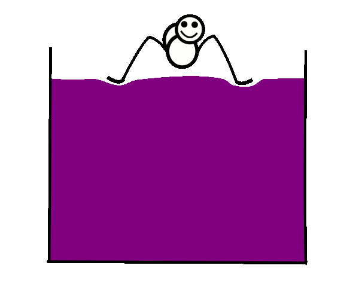
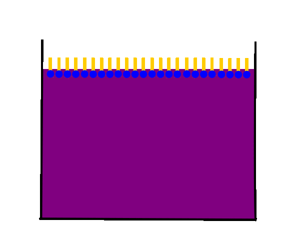
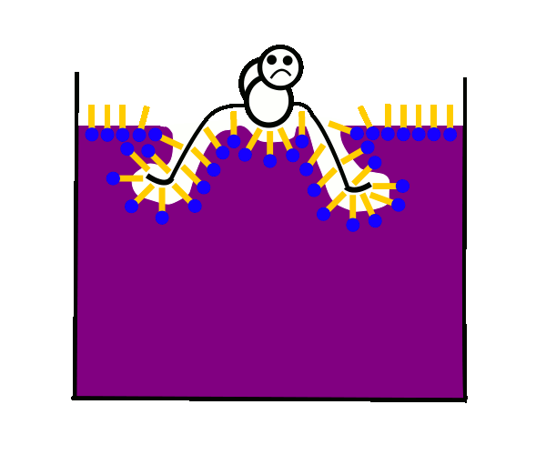

Zwischen den Wassermolekülen der wässrigen Phase wirken starke Wasserstoffbrückenbindungen.
Da auch die Wassermoleküle der Grenzschicht stark aneinanderhaften, kommt es zur sogenannten "Oberflächenspannung".
Zwischen den Wassermolekülen der wässrigen Phase wirken starke
Wasserstoffbrückenbindungen.
Da auch die Wassermoleküle der Grenzschicht stark aneinanderhaften,
kommt es zur sogenannten "Oberflächenspannung".

Die durch feine Härchen an den Beinen gut verteilte Gewichtskraft des
Wasserläufers führt daher nicht zu einer Trennung der Wassermoleküle
voneinander, so dass seine Füße nicht benetzt werden und er nicht einsinkt.

Tenside (von lat. tendere=spannen) sind grenzflächenaktive Substanzen.
Die Tensidmoleküle ordnen sich so an, dass die hydrophilen polaren
Kopfgruppen sich an der Wasseroberfläche anordnen und die hydrophoben
unpolaren Schwanzgruppen sich in die umgebende Luft strecken.
Durch die Abstoßung der Tensidmoleküle voneinander werden auch die
Wassermoleküle an der Grenzfläche leichter voneinander getrennt.
Dies setzt die Oberflächenspannung herab.

Die Füße des Wasserläufers durchstoßen nun die Wasseroberfläche
und sie werden zusätzlich leichter vom Wasser benetzt.
Daher sinkt er jetzt ein - Blubb!